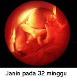

Minggu ke-29 :
Kelenjar adrenalin bayi mulai menghasilkan hormon seperti
androgen dan estrogen. Hormon ini akan menyetimulasi hormon prolaktin
di dalam tubuh ibu sehingga membuat kolostrum (air susu yang pertama
kali keluar saat menyusui).
Sensitifitas dari bayi semakin jelas, bayi sudah bisa
mengidentifikasi perubahan suara, cahaya, rasa dan bau. Selain itu otak
bayi sudah bisa mengendalikan nafas dan mengatur suhu badan dari bayi.
Postur dari bayi sudah semakin sempurna sebagai seorang manusia, berat
badannya 1100-1200 gram, dengan tinggi badan 37-39 cm.
 Minggu ke-30 :
Minggu ke-30 :
Lemak dan berat badan bayi terus bertambah sehingga bobot
bayi sekarang sekitar 1400 gram dan panjangnya 27 cm. Karena ia semakin
besar, gerakannya semakin terasa
Mata indah bayi sudah mulai bergerak dari satu sisi ke sisi yang lain
dan dia sudah mulai belajar untuk membuka dan menutup matanya. Saat ini
waktu yang terbaik bagi bunda untuk menyenteri perut dan
menggerak-gerakan senter tersebut maka mata bayi sudah bisa mengikuti
ke arah mana senter tersebut bersinar.cairan ketuban (amniotic fluid)
di rahim bunda semakin berkurang. Kini si kecil pun sudah mulai
memproduksi air mata. Berat badan bayi 1510-1550 gram, dengan tinggi
39-40 cm.
 Minggu ke-31 :
Minggu ke-31 :
Plasenta masih memberikan nutrisi yang dibutuhkan bayi. Aliran darah di
plasenta memungkinkan bayi menghasilkan air seni. Ia berkemih hampir
sebanyak 500 ml sehari di dalam air ketuban
Perkembangan fisik bayi sudah mulai melambat pada fase ini,
hanya berat badan bayilah yang akan bertambah. Selain itu lapisan
lemak akan semakin bertambah dibawah jaringan kulitnya. Tulang pada
tubuh bayi sudah mulai mengeras, berkembang dan mulai memadat dengan
zat-zat penting seperti kalsium, zat besi, fosfor. Berkebalikan dengan
perkembangan fisiknya, pada fase ini perkembangan otaknyalah yang
berkembang dengan sangat pesat dengan menghasilkan bermilyar sel.
Apabila diperdengarkan musik, bayi akan bergerak. Berat badan bayi
1550-1560 gram dengan tinggi 41-43 cm.

Minggu ke-32 :
Jari tangan dan kaki telah tumbuh sempurna, begitu pula
dengan bulu mata, alis dan rambut di kepala bayi yang semakin jelas.
Lanugo yang menutupi tubuh bayi mulai rontok tetapi sebagian masih ada
di bahu dan punggung saat dilahirkan. Dengan berat 1800 gram dan
panjang 29 cm, kemampuan untuk bertahan hidup di luar rahim sudah
lebih baik apabila di dilahirkan pada minggu ini.
Kulit bayi semakin merah, kelopak matanya juga telah terbuka dan
system pendengaran telah terbentuk dengan sempurna. Kuku dari jari
mungil tangan dan kaki si kecil sudah lengkap dan sempurna. Rambutnya
pun semakin banyak dan semakin panjang. Bayi sudah mulai bisa
bermimpi, .
